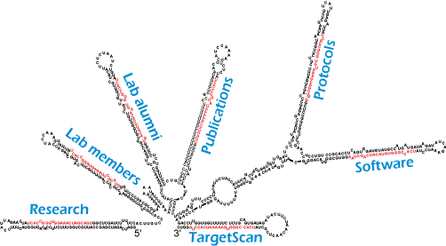

We study RNA. A major focus is on microRNAs (miRNAs), which are ~22-nt RNAs that specify gene repression by pairing to messenger RNAs (mRNAs) of protein-coding genes. We also investigate other types of short RNAs and the proteins that either make short RNAs or use them to silence gene expression. Another focus is on mRNAs, with particular interest in their untranslated regions and tails, and how these regions recruit and mediate regulatory phenomena. Our experimental approaches include 1) evolutionary and computational analyses, e.g., showing that most human genes are regulated by miRNAs, 2) high-throughput molecular measurements, e.g., showing that mammalian miRNAs predominantly act to destabilize their mRNA targets, 3) detailed biochemical analyses, e.g., revealing molecular mechanisms of RNA-silencing components, and 4) phenotypic analyses, e.g., revealing biological functions of particular miRNA:target interactions, including interactions important for preventing human cancers.